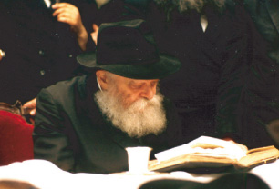

תרגום: ר’ סטודניץ אוסקר רתח מכעס ואש הנקמה בערה בלבו. הוא נלחם נגד הנאצים יחד עם
אוסקר רתח מכעס ואש הנקמה בערה בלבו. הוא נלחם נגד הנאצים יחד עם הפולנים הפרטיזנים. בהמשך, כשהרוסים פלשו לגרמניה, הצטרף אוסקר אליהם עד שלבסוף ‘זכה’ להימנות בין משחררי אושוויץ. במשך ימים ארוכים התהלך כמטורף בחיפוש אחר אמו ואחיותיו – אך לשוא. אוסקר נותר לבדו. מה שהוא ראה שם, הזוועות שנותרו, ימשיך לרדו
תרגום: ר’ סטודניץ
אוסקר רתח מכעס ואש הנקמה בערה בלבו. הוא נלחם נגד הנאצים יחד עם הפולנים הפרטיזנים. בהמשך, כשהרוסים פלשו לגרמניה, הצטרף אוסקר אליהם עד שלבסוף ‘זכה’ להימנות בין משחררי אושוויץ. במשך ימים ארוכים התהלך כמטורף בחיפוש אחר אמו ואחיותיו – אך לשוא. אוסקר נותר לבדו. מה שהוא ראה שם, הזוועות שנותרו, ימשיך לרדוף אותו בשלושים שנים הבאות. “זה השכר עבור היותי יהודי?! חשב במרמור ובכעס.

אוסקר נולד בוורשה בסוף שנות העשרים למשפחה שומרת מצוות. כשהגרמנים פלשו לפולין, הוא היה בתחילת שנות ה’עשרה’. הוריו חשבו שהגרמנים בסך הכל רוצים יותר שטח מחיה בעבור עצמם וכי בסופו של דבר הפלישה תהיה לטובת כולם. “הם עם תרבותי ומשכיל” טענו, “אם יש משהו שיכול לעדן את הפולנים המגושמים, זה רק הגרמנים”. משום כך ברכו על הפלישה הגרמנית לפולין…
אבל אוסקר חשב אחרת. הוא לא סמך עליהם. הוא לא אהב לראות כיצד הם הולכים בגאווה ברחובות פולין בעוד הם מצהירים סיסמאות אנטישמיות לרוב. למורת רוחם של הוריו, הצטרף אוסקר למחתרת הפולנית ולחם בגרמנים הפולשים. לימים התברר שזה בדיוק מה שהציל את חייו.
תקופה קצרה לאחר פלישת הגרמנים, נפטר אביו מהתקף לב, ולא עבר זמן רב עד ששאר בני משפחתו נלקחו בידי הגרמנים. בצהרי יום לא-בהיר אחד, כשעמד על גג ביתם והסתכל לעבר הרחוב, ראה חיילים גרמנים מוציאים את אחיו ואחותו לרחוב יחד עם יהודים נוספים, ויורים בהם למוות. הבאים בתור היו אמו ושאר אחיותיו שנשלחו לאושוויץ. משם הן כבר לא שבו.
אוסקר רתח מכעס ואש הנקמה בערה בלבו. הוא נלחם נגד הנאצים יחד עם הפולנים הפרטיזנים. בהמשך, כשהרוסים פלשו לגרמניה, הצטרף אוסקר אליהם עד שלבסוף ‘זכה’ להימנות בין משחררי אושוויץ. במשך ימים ארוכים התהלך כמטורף בחיפוש אחר אמו ואחיותיו – אך לשוא. אוסקר נותר לבדו.
מה שהוא ראה שם, הזוועות שנותרו, ימשיך לרדוף אותו בשלושים שנים הבאות. “זה השכר עבור היותי יהודי?!” חשב במרמור ובכעס.
השקט שאחרי הסערה
אוסקר נמלט מהצבא. המלחמה נגמרה ובלאו הכי לא יתנו לו להרוג עוד גרמנים. הוא הבין שאין עוד טעם להמשיך לשרת את הצבא. הוא חצה גבול ועוד גבול עד שלבסוף עלה על אוניה שהפליגה לאמריקה הרחוקה.
הוא היה לבד. ללא משפחה, ללא חברים, בלי עבר ושורשים. איזה מין עתיד יהיה לו? רק תשוקה אחת בערה בלבו – להתרחק מהיהדות עד כמה שניתן. הוא התיישב בלוס אנג’לס, שינה את שם משפחתו ל”לף” ולמד אנגלית. כל רגע פנוי התמסר והשקיע בעסקיו מתוך רצון לשכוח את עברו.
אבל אז ירד הלילה. אוסקר חזר הביתה והשקט מילא את החדר. האוויר דמם, והוא היה נזכר – זכרונות מהגהנום רדפו והציפו אותו. אוסקר הדליק את מכשיר הטלוויזיה ובהה בתמונות המרצדות עד שנרדם. ככה כל לילה. אין רגע אחד של שקט פנימי. זאת היתה שגרת חייו של אוסקר, במשך שנים.
ערב אחד, כעשרים שנה לאחר תום המלחמה, אוסקר בהה במסך הטלוויזיה כהרגלו. עיניו החלו נעצמות. משהו שראה על גבי המסך הפתיע אותו במעט ועורר אותו באחת.
על גבי מסך הטלוויזיה הופיע דמותו של רב שדיבר באידיש. “מי היה רוצה לצפות בשידור עם רב שמדבר אידיש”? חשב לעצמו בזלזול. תגובתו הראשונית הייתה לכבות את הטלוויזיה, אך במחשבה שניה החליט לחכות כמה דקות לראות אם יתפתח משהו מעניין יותר. הרב המשיך לדבר ולדבר ותרגום סימולטני לאנגלית החל להופיע בתחתית המסך. פתאום, כל השנאה שהיתה בו כלפי היהדות, חזרה והציפה אותו. הכעס שוב מילא את לבו.
הוא רצה ללחוץ על השלט ולעבור לערוץ אחר, אך למרות זאת משהו עצר בעדו. לרב הזה שדיבר, היה מראה פנים יחודי. עיניו נראו עמוקות ועצמתיות באופן מיוחד. היה זה הרבי מליובאוויטש. ‘אלו דברים חשובים יכולים להיות לו לומר?’ הרהר בספקנות. אוסקר כבר היה עייף והתקדם על מנת לכבות את הטלוויזיה, ואז פתאום אמר הרבי בתוך דבריו כי כל יהודי שבורח מיהדותו לאחר המלחמה נותן פרס להיטלר ימ”ש.
אוסקר המוכה הלם, נעץ מבטו במילים שהמשיכו לרצד בתחתית המסך. “הגרמנים ניסו להכחיד את העם היהודי, והדרך הכי טובה להתנקם בהם היא להתחזק בתורה ומצוות ולתת ליהדות המשכיות”. אוסקר ישב מול מסך הטלוויזיה ולא הצליח לזוז ממקומו. הוא הרגיש שהרבי מדבר ישירות אליו כמו קרא את מחשבותיו. הוא ידע בדיוק כיצד רגש הנקמה בער בלבו. לראשונה, כבר לא חש כה בודד בעולם, היה מישהו שהבין בדיוק מה עובר עליו.
אוסקר הרגיש כיצד עיניו ומילותיו של הרבי הצליחו לחדור מבעד מסך הטלוויזיה ולבקוע את המעטה הקר שעטף אותו במשך שנים כה רבות. הוא הצליח לשבור את המחיצה המבדילה בין גופו לנשמתו ועורר אותה מתרדמתה העמוקה.
כשהתאושש במעט, רשם את מספר הטלפון שהופיע על גבי המסך ומיד כשהסתיים השידור, הרים את השפופרת וחייג. השעה הייתה כבר קרוב לחצות הלילה, אך מישהו ענה לטלפון וקבע לו פגישה ליום המחרת באחד מבתי חב”ד בלוס אנג’לס. אוסקר כבר להצליח להרדם. הוא רק שכב במיטתו ובכה.
בשעה היעודה הגיע לפגישה בבית חב”ד, שם קיבל תמליל משיחתו של הרבי בה צפה בה אמש, ובמשך יום שלם קרא וחזר שוב ושוב על אותו המשפט שאמר הרבי “מי שבורח מיהדותו נותן פרס להיטלר ימ”ש”.
אוסקר הזמין מבית הדפוס כרטיס ביקור חדש עם השם “ליפשיץ”, לאחר מכן, חזר לבית חב”ד להזמין את זוג התפילין הראשון שלו מאז היותו בר-מצוה. לבסוף, נדר נדר להתחיל לחיות כיהודי דתי, ולשמור מצוות.
הנקמה אכן הגיעה.
אוסקר ניצח את היטלר ימ”ש.